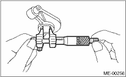
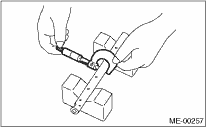

MECHANICAL(H4SO) > Valve Rocker Assembly
1. VALVE ROCKER ARM & ROCKER SHAFT
1. Measure the inner diameter of valve rocker arm and outer diameter of valve rocker shaft, and confirm the difference (oil clearance) between the two values.
Clearance between arm and shaft:
Standard
0.020 — 0.054 mm (0.0008 — 0.0021 in)
Limit
0.10 mm (0.0039 in)


2. If the oil clearance exceeds the limit, replace the valve rocker arm or shaft, whichever shows the greater amount of wear.
Rocker arm inside diameter:
22.020 — 22.041 mm (0.8669 — 0.8678 in)
Rocker shaft diameter:
21.987 — 22.000 mm (0.8656 — 0.8661 in)
3. If the cam or valve contact surface of valve rocker arm is worn or dented excessively, replace the valve rocker arm.
4. Check the valve rocker arm roller for smooth rotation. If not, replace the valve rocker arm.